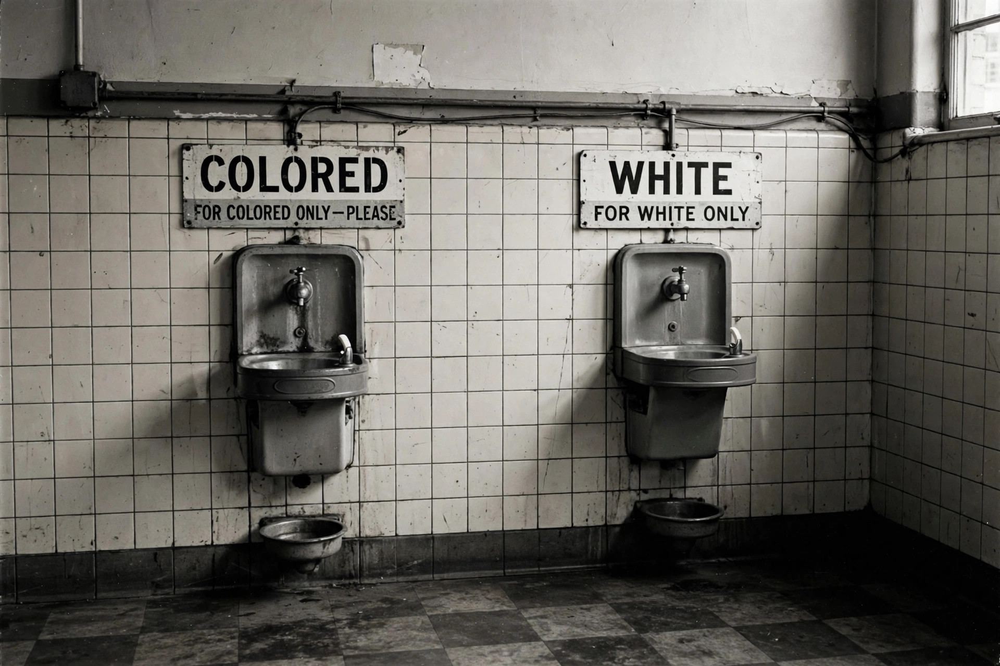

Segregation in the United States is the systematic separation of people by race, ethnicity or other characteristics in daily life, including in schools, housing, transportation, employment and public accommodations. Racial segregation was legally enforced in much of the country — most comprehensively in the Southern states under the Jim Crow system — from the late nineteenth century until the civil rights movement of the 1950s and 1960s secured its dismantling in federal law. Segregation also affected Native Americans, Asian Americans, Mexican Americans and other groups, and significant de facto segregation persists in housing and education.
After Reconstruction, Southern legislatures enacted laws mandating the separation of Black and white Americans in schools, trains, restaurants, theatres, restrooms and drinking fountains, alongside measures — poll taxes, literacy tests and grandfather clauses — designed to disenfranchise Black voters. In Plessy v. Ferguson (1896), the Supreme Court upheld state segregation laws under the doctrine of "separate but equal", which remained the law of the land for nearly six decades, although the facilities provided to Black Americans were almost never equal in fact.
Segregation extended beyond the South and beyond Black Americans. Chinese immigrants faced exclusion laws and segregated schools on the West Coast; Mexican American children in California were assigned to separate "Mexican schools" until the federal courts struck the practice down in Mendez v. Westminster (1947); Native American children were sent to off-reservation boarding schools designed to erase Indigenous languages and cultures; and Japanese Americans were forcibly removed to internment camps during the Second World War.
In Northern and Western cities, segregation was maintained less by statute than by practice: restrictive covenants barring sales to minority buyers, discriminatory lending (redlining), steering by real estate agents, and violence against families who moved into white neighbourhoods. "Sundown towns" across the country excluded Black residents after dark. These patterns produced durable residential segregation that outlasted the formal repeal of Jim Crow.
The legal assault on segregation was led by organisations such as the NAACP under lawyers including Thurgood Marshall. In Brown v. Board of Education (1954), a unanimous Supreme Court led by Chief Justice Earl Warren held that separate educational facilities are inherently unequal. Enforcement met massive resistance: the Little Rock Nine required federal troops in 1957, and some districts closed public schools rather than integrate.
Congress completed the statutory dismantling with the Civil Rights Act of 1964, which outlawed segregation in public accommodations and employment discrimination; the Voting Rights Act of 1965; and the Fair Housing Act of 1968. Court-ordered busing in the 1970s sought to remedy segregated schooling, though later decisions limited metropolitan remedies and released many districts from supervision.
Although de jure segregation is abolished, scholars and civil rights advocates point to continuing disparities in school funding, housing patterns, wealth and incarceration as legacies of the segregated era. Debates continue over affirmative action, school assignment policies and the extent to which government bears responsibility for remedying de facto segregation.
From Wikipedia, the free encyclopedia.